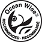

Pacific halibut is prized for the delicate flavor and firm texture of its sparkling white, almost translucent flesh. The lean white meat of the Pacific halibut is high in protein and low in sodium, fat and calories, and with a minimum of bones, halibut as whole fish, fillets or portions adapts well to baking, broiling, frying, poaching or barbecuing.
Pacific halibut is one of the largest flatfish – they can weigh up to about 500 pounds and grow to over 8 feet long. Males tend to be smaller than females. Halibut are demersal, living on or near the bottom of the water and prefer water temperatures ranging from 3 to 8 degrees Celsius (37.4 to 46.4 degrees Fahrenheit).
Halibut are strong swimmers and are able to migrate long distances. Halibut of all ages and sizes are involved in a predominantly clockwise (northwest to southeast) migration from their settlement areas, reproductive fish also make regular seasonal migrations from more shallow feeding grounds in summer to deeper spawning grounds in winter.
Halibut with Roasted Grape Tomato Salsa
4 pieces skinless halibut fillet, each fillet about 6-ounces/170 grams), coarse salt and freshly cracked black pepper, 1 Tbsp fresh thyme, grated zest of 1 lime, 2 tbsp olive oil (30 ml), lime wedges, 1 bunch watercress. 1 ½ cup grape tomatoes, cut in half (375 ml), 12 red pearl onions, blanched and peeled splash of olive oil, grated zest and juice of 1 lime, for salsa.
Directions for: Halibut with Roasted Grape Tomato Salsa at foodnetwork.ca >>

Olive-Oil Poached Halibut with Chipotle-Potato Salad and Gazpacho
4 (6-oz/170 g) fresh halibut, at least 3/4-inch thick, 2 cups (500 mL) + 1 Tbsp (15 mL) olive oil, salt and white pepper, 2 Tbsp (30 mL) chopped fresh parsley, 1 tbsp (15 mL) chopped fresh chives, mint-cucumber gazpacho, chipotle aioli, chipotle potato salad for serving.
Directions for: Olive-Oil Poached Halibut with Chipotle-Potato Salad and Gazpacho at foodnetwork.ca >>

*All of our products are 100% wild and harvested from the pristine coastal waters of British Columbia. We provide sustainable seafood that is flash frozen at sea ensuring premium quality products. Our products are Ocean Wise® approved which means they are recommended by the Vancouver Aquarium as an ocean friendly seafood choice.